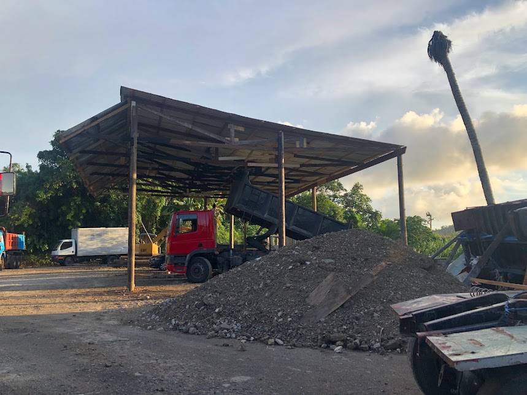
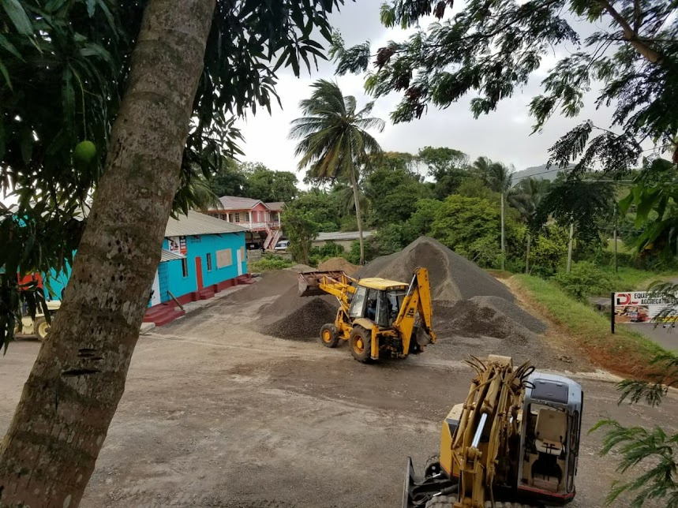

DL project portfolio
The work, together.
This is DL’s working record: the major projects, site progress and field operations that show how serious work gets done across Saint Lucia.
Named projects
One project. One complete record.
Each project keeps its images and related capabilities together. Service tags are there for context only—one project can include site works, fleet, haulage and materials at the same time.
Buckeye ProjectHide galleryView gallery
Field images from the Buckeye Project.
10 images.jpeg)


.jpeg)

.jpeg)
.jpeg)

.jpeg)

Paix Bouche retaining wallHide galleryView gallery
Retaining-wall construction at Paix Bouche.
5 images


Queenslane demolitionHide galleryView gallery
Image record from the Queenslane demolition. The gallery remains together so the scale and stages of the job can be understood in one view.
32 images


Rex St. Lucian demolitionHide galleryView gallery
Field image from the Rex St. Lucian demolition. Further approved project materials can be added to this same record.
1 image
Work in the field
Good work does not always need a project name.
Use this space for strong images from smaller jobs, equipment moves, deliveries and day-to-day field operations. They can be added as they come in—without creating a formal project record.





Planning a project?
Put the next job in motion.
Tell DL what you are planning, where the work is located and when you need to start. The team can help define the right combination of field capability.
Request a quote